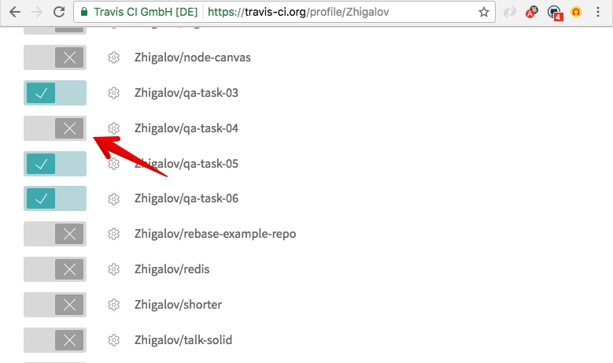
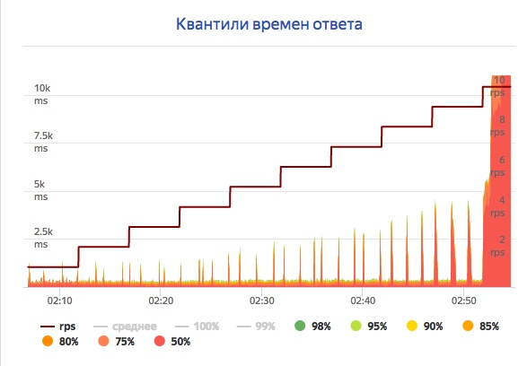
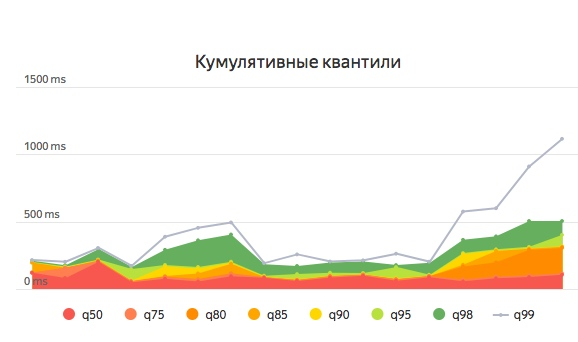
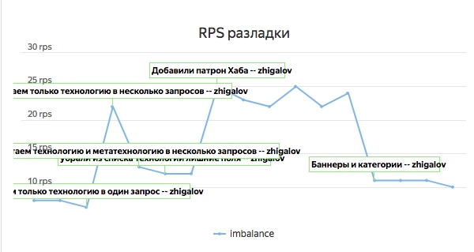

Tools
Качество кода. Покрытие кода. Нагрузочное тестирование. Непрерывная интеграция
Code quality tools
(инструменты проверки качества кода)- Обнаружить ошибки до запуска кода
- Привести код к единому стилю
- Убрать лишний код
- Сделать ревью кода полезным
ESlint ⭐️ 11327
Ошибки
function getPokerHand(dice) {
if (Array.isArray(dice))
console.log('Diсe is', typeof dice);
throw new Error('Dice is not array');
return 'Покер';
}
Неиспользуемые переменные
/**
* Represents a sum
*
* @param a The first number.
* @param {number} b
*/
function sum(a, b) {
return a + c;
}
Единый стиль кода
function formatDate(date) {
var hours=('0'+date.getHours()).slice(-2)
const minutes=('0'+date.getMinutes()).slice(-2);
let nextDay=new Date(date.setDate(date.getDate()+1)).toDateString();
if (nextDay==new Date())
return 'в '+hours+':'+minutes
/* ... */
}
Единый стиль кода
./node_modules/.bin/eslint eslintWrongExamples/codestyle.js --fix
Единый стиль кода
function formatDate(date) {
const hours = (`0${date.getHours()}`).slice(-2);
const minutes = (`0${date.getMinutes()}`).slice(-2);
const nextDay = new Date(date.setDate(date.getDate() + 1)).toDateString();
if (nextDay == new Date()) { return `в ${hours}:${minutes}`; }
/* ... */
}
Вывод на консоль
function getPokerHand(dice) {
console.log(dice);
/* ... */
}
Установка ESLint
# Установка eslint
npm install eslint --save-dev
# Создание конфига
./node_modules/.bin/eslint --init
? How would you like to configure ESLint?
Answer questions about your style
❯ Use a popular style guide
Inspect your JavaScript file(s)
# Запуск eslint
./node_modules/.bin/eslint .
Конфигурация
// .eslintrc.js
module.exports = {
"extends": "yandex",
"rules": {
"no-unused-vars": 0, // выключено
"max-len": [1, 100], // предупреждение
"max-params": [2, 3] // ошибка
}
}
Список
Code coverage
(измерение покрытия кода тестами)istanbul ⭐️ 7180
# Установка istanbul
npm install istanbul --save-dev
# Запуск istanbul
./node_modules/.bin/istanbul cover
./node_modules/.bin/_mocha
qa-task-03/tests
# Открываем отчет с результатом coverage
open coverage/lcov-report/index.html
100% результат не означает, что весь код протестирован
Пример
function playPoker(firstDice, secondDice) {
const first = getPokerHand(firstDice);
const second = getPokerHand(secondDice);
const compareHands =
pokerHands.indexOf(first) -
pokerHands.indexOf(second);
return compareHands === 0
? 'Ничья'
: compareHands > 0 ? 'Первый' : 'Второй';
}
Тесты
describe('playPoker', () => {
it('should return `Ничья` for equal poker hand', () => {
const actual = playPoker([1, 1, 2, 3, 4], [1, 1, 2, 3, 5]);
assert.equal(actual, 'Ничья');
});
it('should return `Первый` when first hand great then second', () => {
const actual = playPoker([1, 1, 1, 1, 4], [1, 1, 1, 3, 4]);
assert.equal(actual, 'Первый');
});
/* ... */
});
unit-coverage ⭐️ 29
# Устанавливаем unit-coverage
npm install --save-dev unit-coverage
# Запускаем ковередж
node_modules/.bin/unit-coverage run
-s 'qa-task-03/src/**'
-t 'qa-task-03/tests/**'
-S relative
-O sources=qa-task-03/src
-O tests=qa-task-03/tests
-- --recursive qa-task-03/tests/
Ковередж считает количество вызовов. Правильность покрытия проверяет разработчик.
Continuous Integration
(непрерывная интеграция)CI - это практика разработки программного обеспечения, которая заключается в слиянии рабочих копий в общую ветвь разработки несколько раз в день и выполнении частых автоматизированных сборок проекта
Этапы
- Клонирование репозитория
- Установка зависимостей (сборка)
- Запуск всех видов тестов
- Сбор метрик
- Уведомление ответственных
- Выкладка
Плюсы
Даёт быструю обратную связь
Дисциплинирует команду
Неизбежное тестирование кода
Автоматизация рутины
Инструменты

TravisCI
- Зарегистрироваться на travis-ci.org
- Активировать репозиторий
- Добавить
.travis.yml
Активировать
.travis.yml
language: node_js
node_js:
- "node"
script:
- npm run cover
load testing
(нагрузочное тестирование)подвид тестирования производительности, сбор показателей и определение производительности и времени отклика программы в ответ на внешний запрос с целью установления соответствия требованиям, предъявляемым к программе
Яндекс.Танк
— это инструмент для нагрузочного тестирования и анализа производительности веб-сервисов и приложений
Шаги
- Подготовить запросы
- Подать нагрузку
- Остановить нагрузку
- Проанализировать результат
Танковая терминология
Танкист
человек, который проводит нагрузочное тестирование
Танк
сервер, с которого отправляются http-запросы
Мишень
приложение на одном или нескольких серверах, которое обслуживает запросы пользователей
Патрон
запрос от нагрузочного сервера к приложению
Стрельба
процесс в ходе которого танкист готовит патроны, проводит нагрузочное тестирование и анализирует результаты
Застрелить
увеличивать нагрузку до тех пор, пока тестируемое приложение (мишень) не перестанет отвечать
Пример
Профиль нагрузки
набор операций с заданной интенсивностью
Профиль "до разладки"
для измерения максимального количества одновременных обращений к сервису
line(1, 2000, 3h)
step(1, 2000, 30, 4m)
Профиль "константный"
для измерения времени ответа сервиса и определения утечек ресурсов
const(10, 24h)
Примеры
const(1, 10m) step(1, 2000, 10, 5m)
const(1, 10m) line(1, 1000, 1h) const(1000, 1h) line(1000, 1, 1h)
const(10, 10m) const(1000, 1m) const(10, 10m)
Серия стрельб
Константная
До разладки
SLA
(англ. Service Level Agreement) — договор между заказчиком и поставщиком, содержащий <...> согласованный уровень качества предоставления данной услуги.
Пример
95% пользователей получат ответ не позже чем через 300ms
Метрики производительности
- Время выполнения запроса
- Потребление ресурсов центрального процессора
- Потребление оперативной памяти
- Потребление сетевых ресурсов
- Работа с дисковой подсистемой
Apache benchmarking tool
ab -c 2 -n 100 https://some/url
Requests per second: 3.78 [#/sec] (mean)
Time per request: 264.300 [ms] (mean, across all concurrent requests)
Connection Times (ms)
min mean[+/-sd] median max
Connect: 95 111 11.5 112 157
Processing: 198 416 645.6 296 5271
Waiting: 134 341 645.7 222 5194
Total: 302 527 645.1 407 5385
Почитать
Тестируем проект
- с 16 по 20 мая
- работа над одним чатиком
- поиск багов, проверка исправлений, регресс
- добровольно, не влияет на оценку
Зачёт
23 мая в 19:30 в 509 аудитории
Результаты